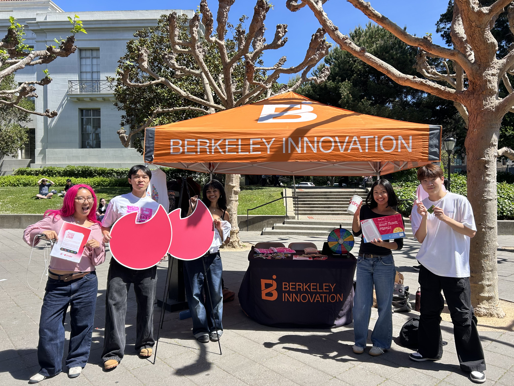
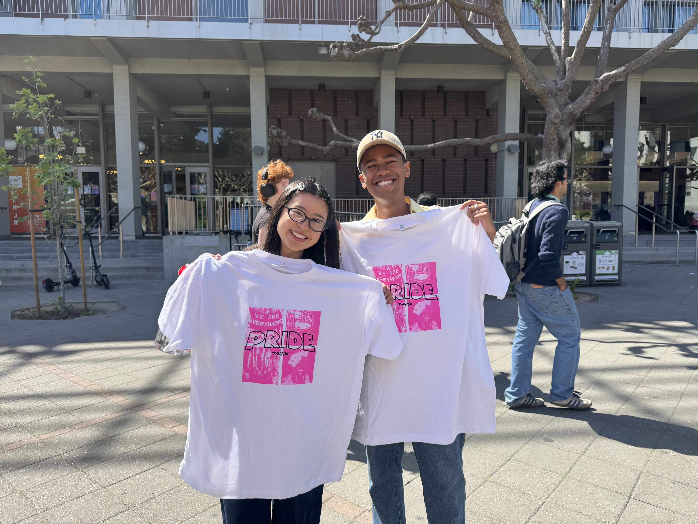
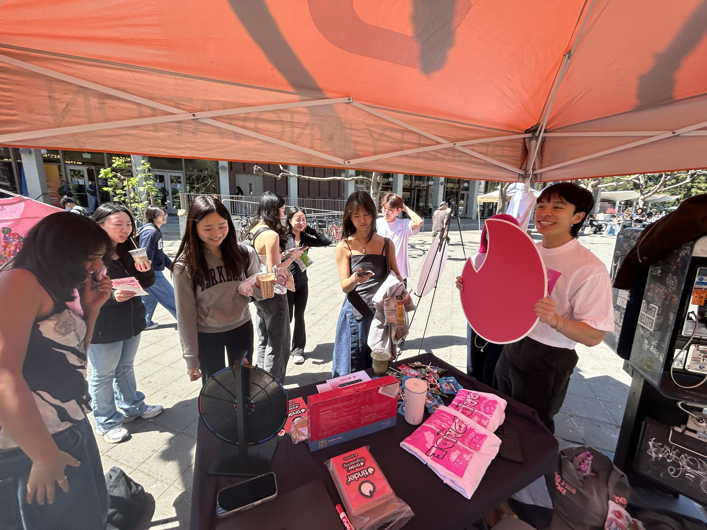
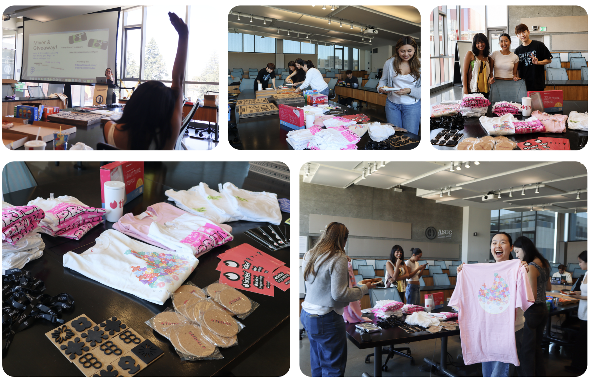
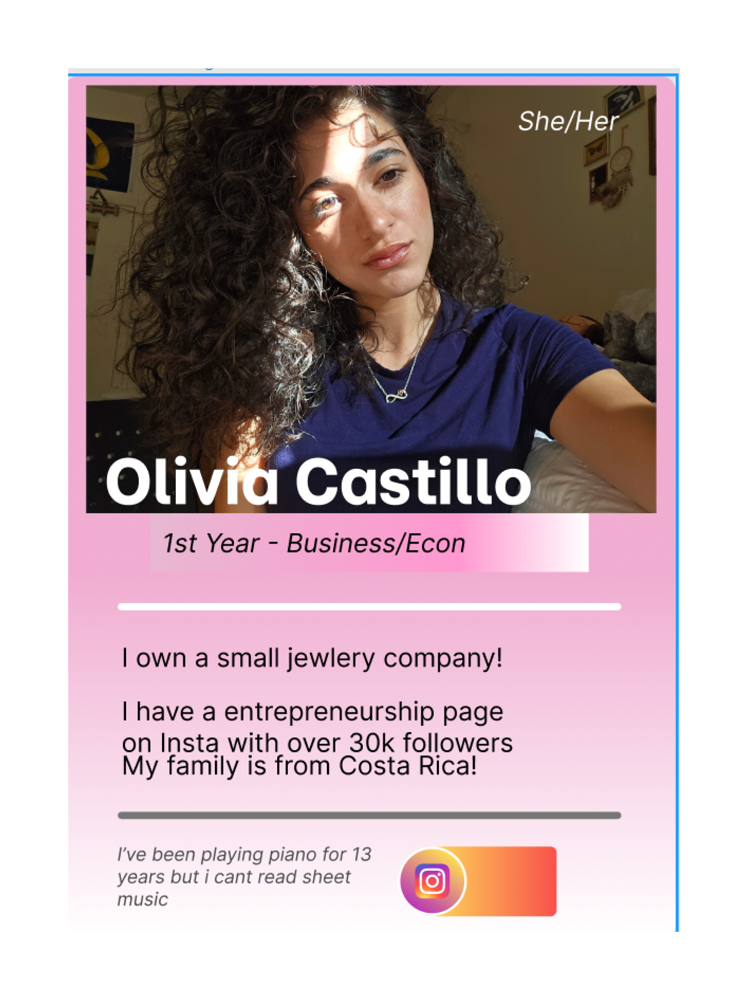
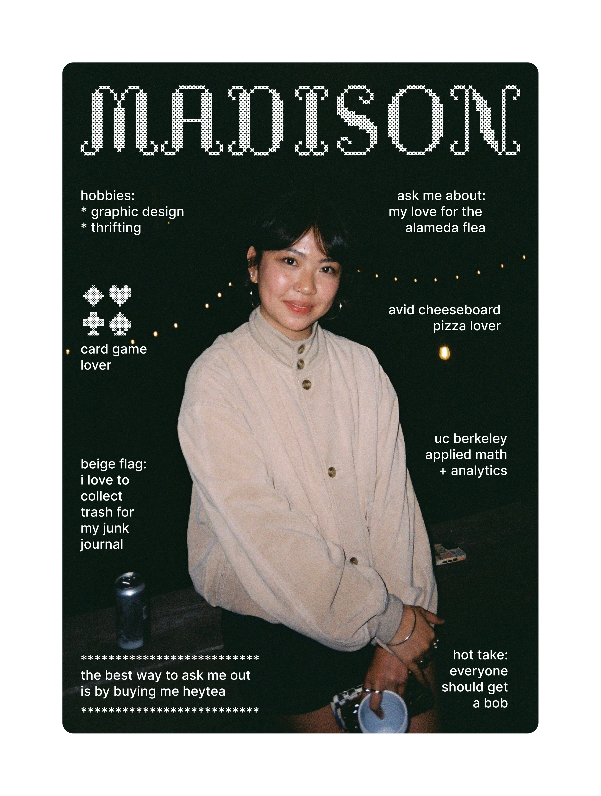
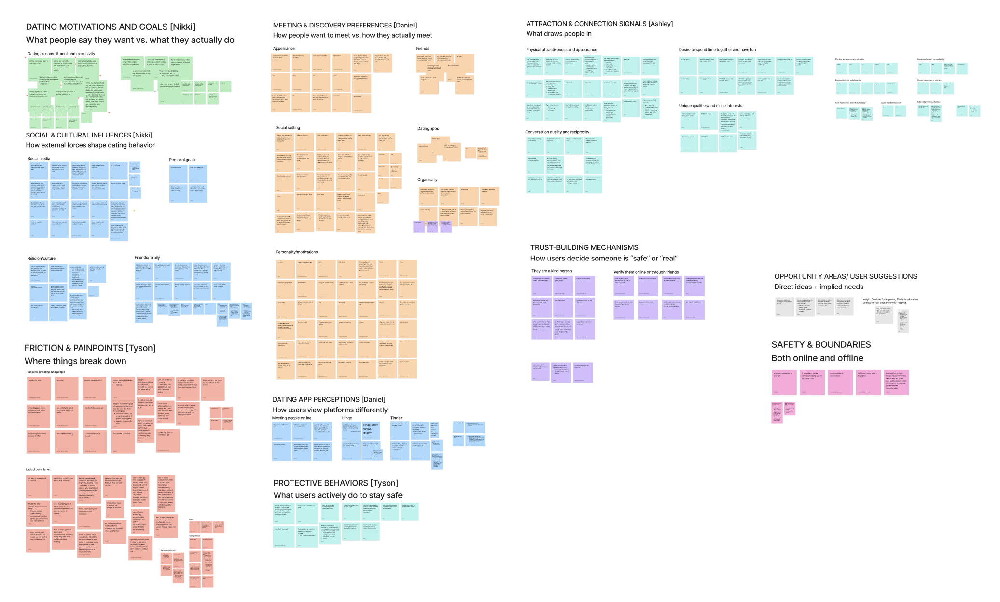
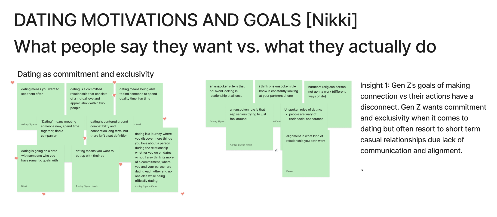
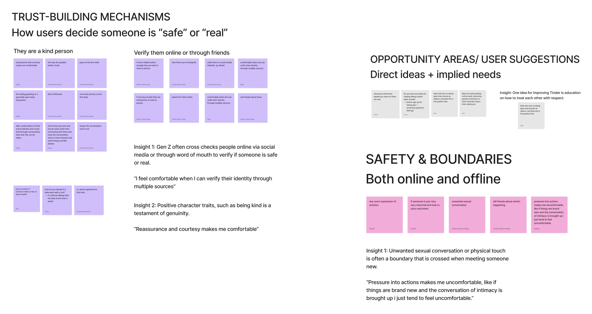
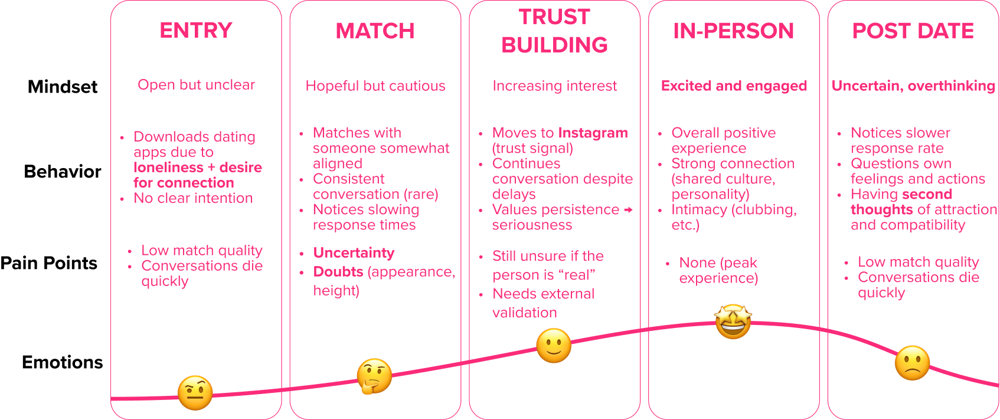

What was this project?
This was a semester-long consulting engagement through Berkeley Innovation — UC Berkeley's human-centered design club — partnered directly with Tinder. Our five-person team was tasked with understanding Gen Z's relationship with dating apps and generating product opportunities for Tinder to rebuild relevance with their most important future user group.
As Ideation Lead, I was responsible for synthesizing our research findings into actionable product concepts — translating insights from 20+ interviews, 6 focus groups, and 115 survey responses into concrete design opportunities.
What problem were we solving?
Tinder is the world's most popular dating app, but its relevance with Gen Z is slipping. Gen Z — the next generation of daters — is facing a loneliness epidemic while simultaneously rejecting the very platforms designed to help them connect.
"How might we explore how Gen Z defines dating today, what safety looks like for Gen Z women, and how Tinder is perceived among competing dating apps?"
Our competitive analysis surfaced a broader industry shift — away from swipe-based, profile-first interactions toward IRL-first, experience-driven connection:
- Group-based interactions over 1:1 matching
- Platforms handling event logistics and planning
- Reduced emphasis on profiles, messaging, and browsing
- Rising demand for authentic, low-pressure connection
How did we understand Gen Z?
We used a multi-method approach to triangulate findings across quantitative and qualitative sources.
Getting out into the field
We ran in-person outreach on campus to increase survey volume and recruit participants for interviews and focus groups — reaching demographics we wouldn't have captured online alone.



Results: 50+ survey responses, 3 mini interviews/focus groups. 73% of respondents identified as female, 5% as non-binary or transgender, 31% as part of the LGBTQ+ community.
What if profiles had no constraints?
We ran a Figma Design Workshop led by UC Berkeley's Figma campus ambassadors — giving participants a blank canvas to design their own dating profile with no template restrictions. This revealed how Gen Z actually wants to present themselves.



Key finding: Participants valued open-ended prompts enabling more authentic self-expression beyond traditional dating app constraints. They expressed identity through personal interests, aesthetics, and visuals — creating more unique and personalized profiles.
Making sense of all the data
After collecting data across all six methods, we ran affinity mapping sessions to cluster findings into themes — surfacing the patterns that cut across interviews, surveys, and focus groups.



What did we find?
From 115 survey responses, 20 interviews, and 6 focus groups, we synthesized 4 key insights that shaped our ideation direction.
The emotional arc of a Gen Z dater
Our diary study tracked Gen Z users through the full dating arc — from downloading the app to post-date reflection. The emotional journey revealed persistent uncertainty at almost every stage.

Key pattern: Trust doesn't build on Tinder — it builds off-platform. Moving to Instagram is the real trust signal. Consistency in communication signals genuine intent. Even good dates lead to second-guessing.
What did we propose?
As Ideation Lead, I synthesized our research into 4 product concepts for Tinder to explore. Each concept directly addresses a specific insight cluster from our research.
What did I take away?
This project pushed our team to slow down and truly understand people's experiences before jumping into solutions. Through all our research, we started to see the real emotions, motivations, and challenges behind how people use these platforms — which made our work feel personal and intentional.
As Ideation Lead, the biggest challenge was resisting the urge to generate ideas too early. The discipline of sitting with the data, finding the real tensions, and only then translating them into concepts was a skill I developed significantly through this project.
Key learning: The best product ideas don't come from feature brainstorming — they come from understanding what users are actually trying to do vs. what the product currently makes them do. That gap is where the opportunity lives.
The team: